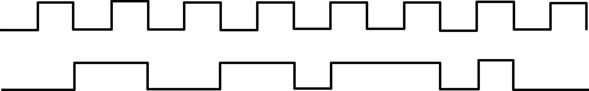
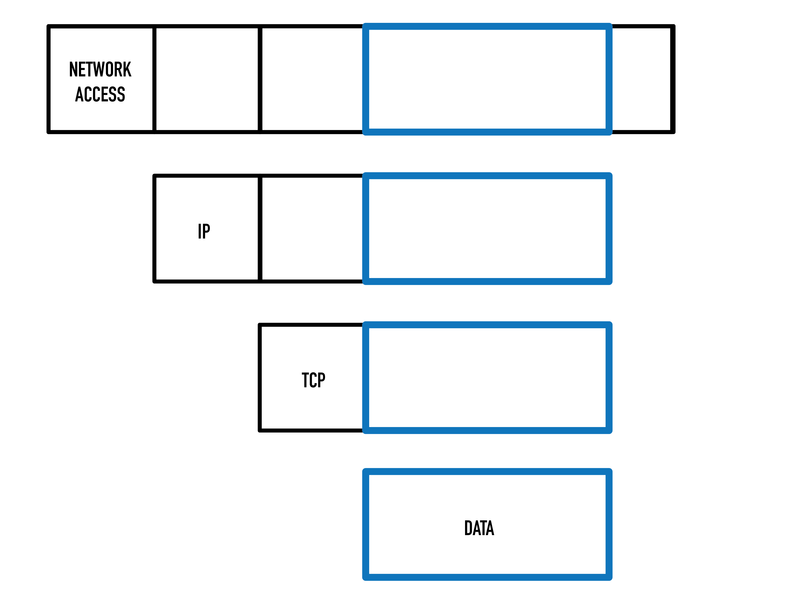
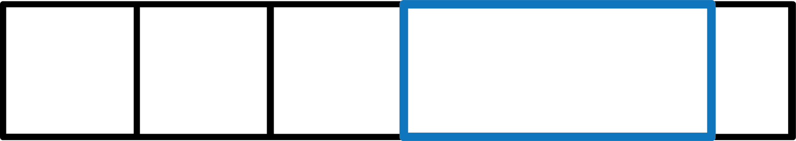
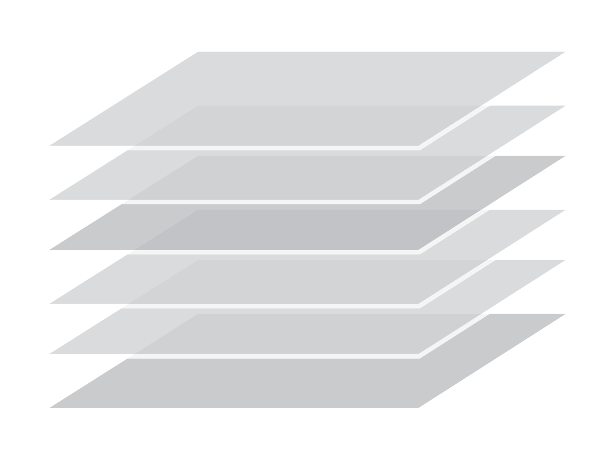
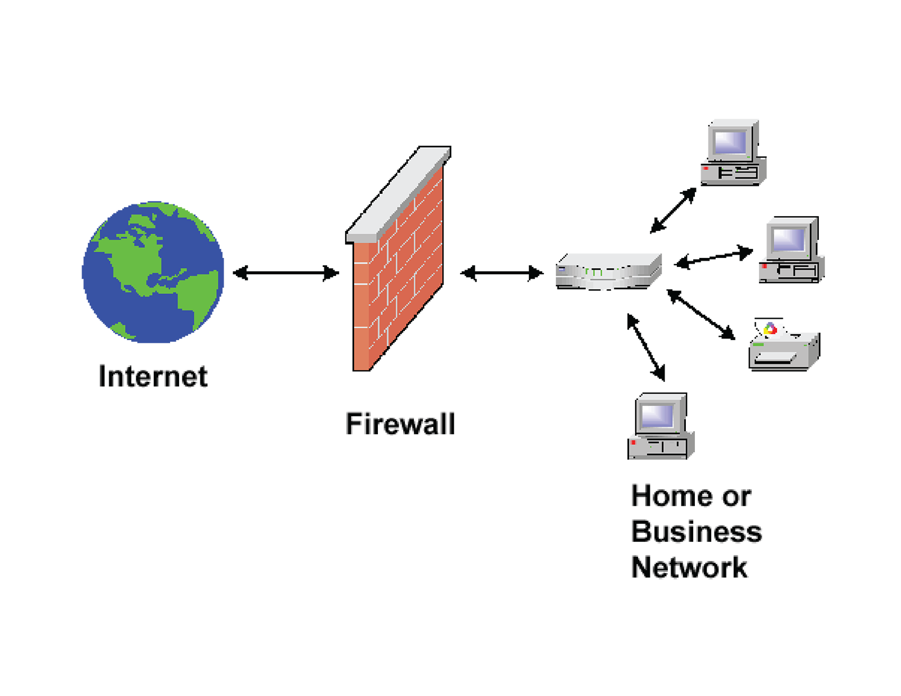
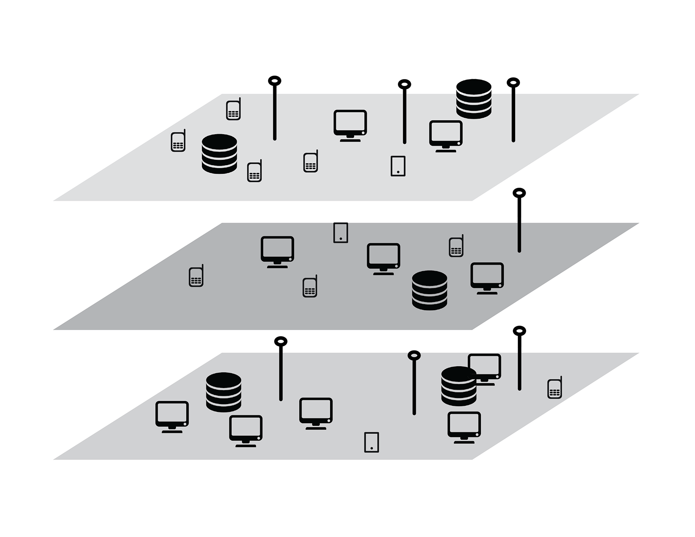
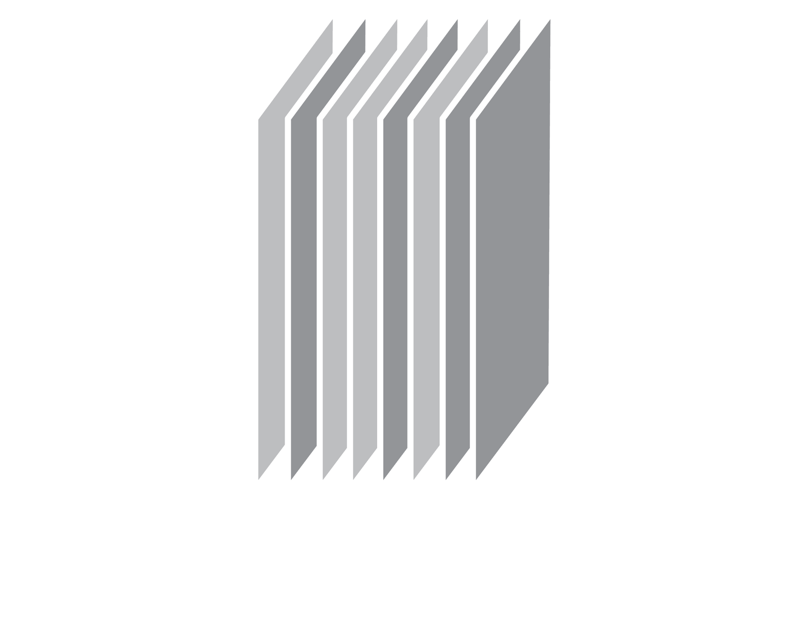
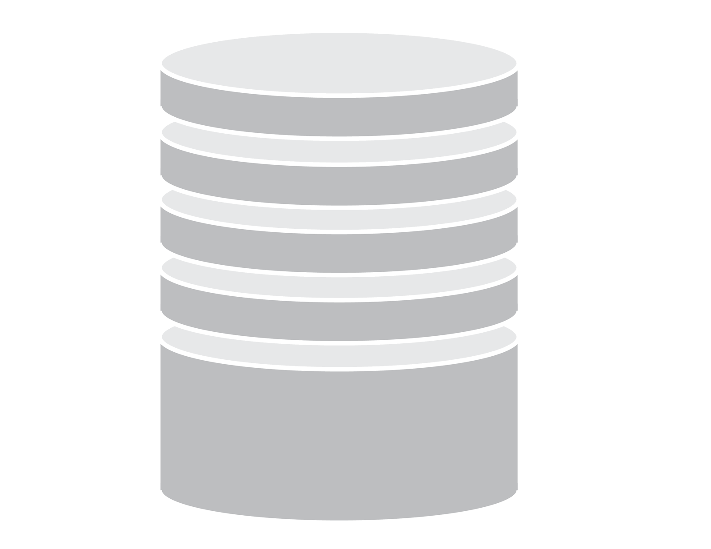
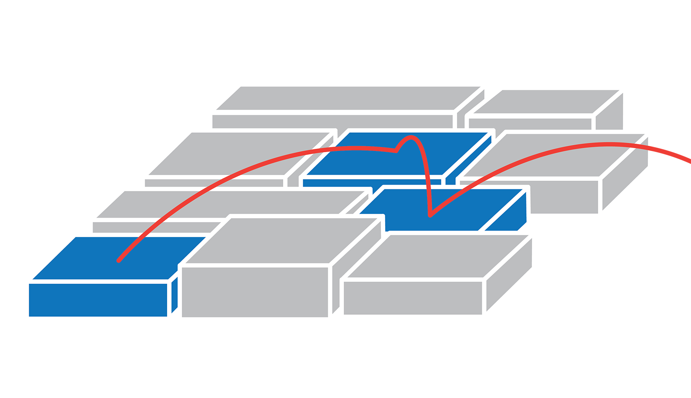

REALITY
VERSIONING
proposes future tradecraft and devices for exploring networked landscapes. The interconnection of everything has created a parallel reality that contains all of our information but does not contain “us.” By making information dimensional,
REALITY
VERSIONING
serves as an alternate cartography for navigating the borderlands between physical and digital space.
#
the apparatus

The Internet serves as the infrastructure of the state, a communication and commerce tool that drives the economy; supporting the superstructure of the political and legal systems that constitute the government. In many ways, with government agencies inhabiting the digital sphere more completely, the imperial superstructure begins to exist inside of the infrastructure.
The cloud becomes the state, an intrinsically totalitarian mechanism feared by criminals and citizens alike. A megastructure facilitating and capturing any and all transaction, recording everything and forgetting nothing.
The primary function of the state is to perpetuate the status quo. Through the gathering of intelligence, the state seeks to control knowledge, and incorporate it.
black boxes
Black Boxes are closed systems and proprietary technologies whose workings are kept secret from its users. The government employs black boxed technology in the surveillance of its citizens, and the The Internet itself, born out of America’s military-industrial apparatus, stands as monument to its own mysterious processes. Created by a notable mix of east coast and west coast minds, its central innovations center around “packet switching.” Packets divide data into containerized bits that make transmission quicker, scalable. The Internet gives an illusion of openness and freedom, but the protocols that dictate the movement of packets limit the possibilities of use.
By demystifying the black box, users are granted access to use and misuse high-technology in productive ways, creating unique solutions to novel problems on existing devices.
infrastructural disobedience
In an interconnected world, the flows of illicit and legal web traffic all flow through the same infrastructure. Current web infrastructure -- the TCP/IP protocol -- is unsafe in nature, and its seams permit malicious and novel appropriation of the system by rogue agents. As it stands, the entire workings of the network are unclear to many daily users, and the lack of comprehension leads directly the plundering of underprotected information.
TCP/IP protocol consists of a stack of functions. First the "datagram," readable by applications, and then various headers that allow the web infrastructure to direct information correctly. By manipulating certain parts of the stack in different ways, rogue users are able to gain insight and access to deeper parts of the system.

By squatting between two levels of the protocol, the Network Access and the Internet layers, users are able to discern source and destination addresses for each packet, as well as past WiFi connections and geographic placement. The Network Access Layer is accessible by anyone willing to deconstruct the packet, and many of our black boxed devices are constantly broadcasting these invisible signals in search of a connection. While the information alone is not detrimental, it provides opportunities for rogue users to manipulate the network and the landscape it sits within.
With the ever-increasing connectivity of devices and ecologies of devices, on our person and in our “smart” lives, the need to viscerally understand how this networked landscape fits together becomes more apparent. While our real-world lives carry on seemingly disconnected, the digital and the physical mesh and meld. Even with adequate protection, modern networks are prone to subversion.

stacks
In order to understand the magnitude of the “information superhighway,” we struggle to construct metaphors. Digital space, cyberspace, hyperspace. Each contextualizes the Internet in terms of the physical: “space.” As the flow of data grows, so does the sentiment that it leaves behind. A landscape of unseeable formations that layer upon physical space over time. Currently we lack the ability to access and visualize this information, and the topographic landscape it creates. Versions stack, and Reality is updated in real time.
Stacks reorganize the shape of the Internet and the shape of sovereignty, hinting at a density that can only be described as "layered." Ben Bratton, in "The Black Stack," defines six layers: Earth, Cloud, City, Address, Interface, and User. Referential to the physical interlocking of components as well as to library architecture, “stacks” are fluid archives that “distort and deform tradition Westphalian modes of political geography, jurisdiction, and sovereignty.” While the Internet removes data from its geographic foundation, the stack grounds it.
The petaflop of information exchanged each day transcends time and space, no longer directly tied to geographic source or destination. Edits and changes obliterate past versions, automatically and quasi-anonymously. The stack incorporates a sense of timelessness, providing a new mode of interacting with information. How can the stack be incorporated into interfaces built for appropriation? How can the stack be altered, rearranged, or modulated?
Currently, digital happenings are unrepresented or underrepresented, simple 1:1 statements. Status updates, timelines, “tweets,” chirped into the aether. One- liners, devoid of environmental context. By imagining data as topographic and geologic, users are able to immerse themselves in a layered, versionable reality. Through stacking, social media information and GIS data can be cross-referenced instantly, across time. Or, maybe census data, the city bus system, and network maps may be more relevant.
The stack is infinitely rearrangeable, but how can an everyday user make sense of this space? And more importantly, how can the stack be applied to more aspects of computing?
wireless cLAN

Squatting between layers and navigating the stacks, the wireless clan is a future breed of dissident. Anarcho-paranoiac rebels that exist inside of the infrastructural seams of networks. With knowledge of how black boxes really work, the wireless clan creates subnetworks invisible to average users. Hopping between frequencies, the manipulative power of the wireless clan is asymmetrical and dangerous. In networked ecologies, this power is multiplied.
Independent of governments and media outlets, the freelancers are nimble and stateless. “Public investigators” such as these employ processes similar to government agencies, like the US Army Field Manual “Intelligence Preparation of the Battlefield,” but do so unsanctioned and completely outside of traditional channels.
With defensive and offensive capabilities, the wireless clan navigates the stack adroitly. The stack, as a cartographic tool, serves to identify gaps in information and provides a framework for situational awareness in a networked age. How do we define ourselves as “users” in this environment, in these new contexts?